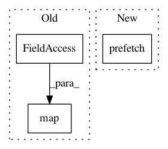

f80592836b5c17fd3e6be14d3f1ad8a3a7aa3663,cloud_tpu/models/alexnet/alexnet.py,,input_fn,#Any#,152
Before Change
train_files = ["%s/train-%05d-of-"
"01024" % (FLAGS.data_dir, num) for num in range(1024)]
dataset = tf.contrib.data.TFRecordDataset(train_files)
dataset = dataset.repeat().map(parser).batch(batch_size)
images, labels = dataset.make_one_shot_iterator().get_next()
return (
tf.reshape(images, [batch_size, 224, 224, 3]),
After Change
dataset = dataset.map(parser,
FLAGS.num_preprocessing_threads)
if FLAGS.prefetch_buffer_size != 0:
dataset = dataset.prefetch(FLAGS.prefetch_buffer_size)
dataset = dataset.batch(batch_size)
images, labels = dataset.make_one_shot_iterator().get_next()
return (
tf.reshape(images, [batch_size, 224, 224, 3]),
In pattern: SUPERPATTERN
Frequency: 3
Non-data size: 3
Instances
Project Name: tensorflow/tpu
Commit Name: f80592836b5c17fd3e6be14d3f1ad8a3a7aa3663
Time: 2017-08-24
Author: frankchn@google.com
File Name: cloud_tpu/models/alexnet/alexnet.py
Class Name:
Method Name: input_fn
Project Name: tensorflow/tpu
Commit Name: 2f8658fbb6e0a545f18618b6238936280f80382c
Time: 2017-10-02
Author: frankchn@google.com
File Name: cloud_tpu/models/cifar/cifar.py
Class Name:
Method Name: input_fn
Project Name: tensorflow/models
Commit Name: e5f88ad6aa3feab03e9797ff0761fe0621bafe0d
Time: 2017-11-06
Author: kathywu@google.com
File Name: official/mnist/mnist.py
Class Name:
Method Name: input_fn